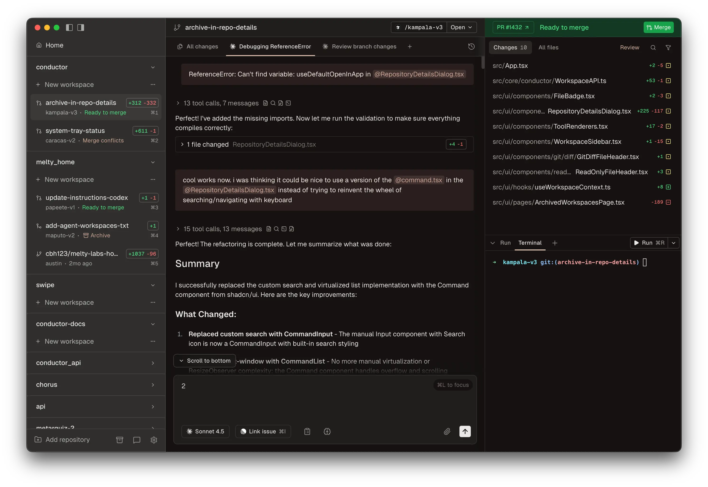
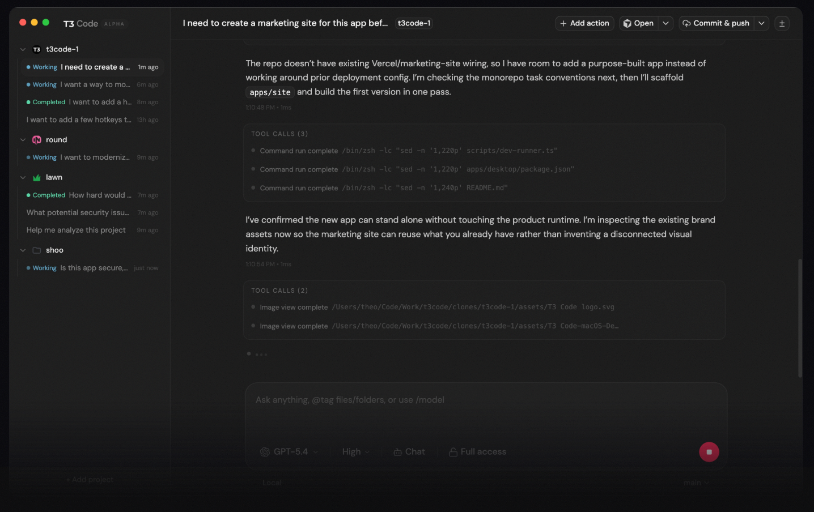
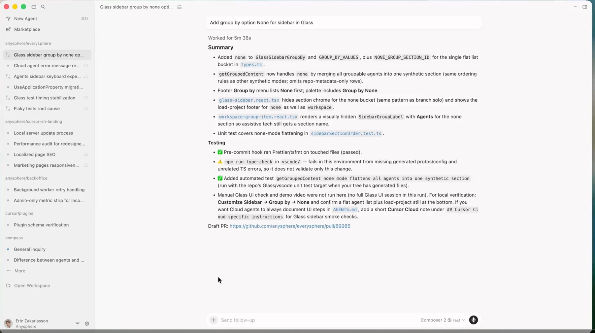

Intercambiando algoritmos em Java — do if/else ao agentic coding
if/else hell à solução extensívelNem precisa explicar o que o código faz. O que você está sentindo ao olhar já é a resposta.
→ próximo slide
public class CalculadoraFrete { public double calcular(String transp, double pesoKg, Endereco dest) { if (transp.equals("CORREIOS")) { correios.connect(); correios.authenticate(config.getCorreiosKey()); Cotacao c = correios.cotar(pesoKg, dest.getCep()); correios.disconnect(); metrics.increment("frete.correios"); return c.getValor(); } else if (transp.equals("JADLOG")) { JadlogResponse r = jadlog.cotar(pesoKg, dest); if (r.isFailed()) retry(transp, pesoKg, dest); return r.getValor(); } else if (transp.equals("LOGGI")) { String token = config.getLoggiToken(); if (token == null) throw new IllegalStateException("sem token Loggi"); return loggi.calcular(token, pesoKg, dest); } else if (transp.equals("MERCADO_ENVIOS")) { Long sellerId = user.getMercadoLivreId(); return mercadoEnvios.cotar(sellerId, pesoKg, dest); } else if (transp.equals("RETIRADA")) { // adicionado na sprint passada return 0.0; } else if (transp.equals("DRONE")) { // adicionado ontem — o time comercial pediu return drone.calcular(dest.getCoords(), pesoKg); } throw new IllegalArgumentException("Transportadora: " + transp); } }
sellerId em Long, diferente dos outros. Cada nova transportadora traz um vocabulário próprio.if/else hell nasce: uma transportadora por vez."correios" minúsculo, boom em produção. Sem teste unitário dá pra perceber?switch de 3 virou 15. Cada feature nova exige editar a mesma classe. Mudar uma coisa quebra outra."Isto não é incompetência — é a natureza do negócio de software. Padrões de projeto existem exatamente porque essa dor é inevitável."
"Soluções reutilizáveis e nomeadas para problemas que aparecem repetidamente no design de sistemas orientados a objetos."
Um padrão é a receita — não o bolo. Guia, não obriga.
Gang of Four (Gamma, Helm, Johnson, Vlissides) · 1994 · 23 padrões clássicos · os padrões se complementam entre si — raramente aparecem sozinhos
Os 23 padrões da GoF formam um catálogo interligado. Eles se combinam, se referenciam, e aprender um abre a porta pros outros. Alguns vizinhos naturais do Strategy:
Padrões são vocabulário compartilhado, não biblioteca nem framework — e fazem mais sentido em conjunto do que isolados.
Em qualquer projeto real, você passa mais tempo lendo código do que escrevendo.
Até aqui é o argumento clássico. Em 2026 existe um motivo novo — e é o mais interessante.
Cada dia escrevemos mais código — e digitamos menos ao mesmo tempo.
Usar agentes virou rotina. O novo desafio é transmitir pra IA as convenções, valores e decisões de design do projeto — como num onboarding humano, só que em Markdown versionado junto do código.
Quando seu padrão Strategy está documentado aqui, toda feature nova criada pela IA já nasce no padrão correto — sem precisar lembrar, sem drift com o tempo.
Você descreve a intenção, o agente propõe, você revisa, aceita ou corrige. Esse ciclo é pair programming — só que o par nunca cansa. E funciona muito melhor em código com padrões claros.
pesoKg pra pesoSpring muda, Quarkus muda, o próprio Java muda. Mas o conceito de "encapsular algoritmo em uma classe que implementa uma interface comum" é verdade em 1994, em 2026, e vai ser em 2040.
Simon Willison e comunidade de agentic engineering · 2026
"Define uma família de algoritmos, encapsula cada um e os torna intercambiáveis. Strategy permite que o algoritmo varie independentemente dos clientes que o usam."
Gamma, Helm, Johnson & Vlissides · Design Patterns (1994)
switch gigante, acoplado, impossível de testar isolado. Viola o Open/Closed Principle.ConcreteStrategy. Sem recompilar o Context.Muita gente aprende polimorfismo em POO e depois aprende Strategy, e pensa "mas isso é só polimorfismo". É — mas com uma intenção nomeada.
O valor do padrão é comunicar: quando você diz FreteStrategy, qualquer leitor — humano ou agente — sabe imediatamente por que o polimorfismo está sendo usado ali.
Um carrinho de compras precisa calcular o frete conforme a transportadora escolhida. Três opções iniciais:
E se amanhã o chefe pedir "adicione Loggi"? Vamos ver como cada abordagem responde.
if/else hellpublic class CalculadoraFrete { public double calcular(String tipo, double pesoKg) { if (tipo.equals("CORREIOS")) { return pesoKg * 2.5 + 10.0; } else if (tipo.equals("JADLOG")) { return pesoKg * 3.0 + 5.0; } else if (tipo.equals("RETIRADA")) { return 0.0; } throw new IllegalArgumentException("Tipo inválido"); } }
"correios" em minúsculo quebra.public interface FreteStrategy { double calcular(double pesoKg); }
public class FreteCorreios implements FreteStrategy { @Override public double calcular( double pesoKg) { return pesoKg * 2.5 + 10.0; } }
public class FreteJadlog implements FreteStrategy { @Override public double calcular( double pesoKg) { return pesoKg * 3.0 + 5.0; } }
public class FreteRetirada implements FreteStrategy { @Override public double calcular( double pesoKg) { return 0.0; } }
Cada classe é testável isolada: new FreteJadlog().calcular(2.0) → 11.0. Nenhuma conhece as outras.
public class Carrinho { private FreteStrategy frete; public Carrinho(FreteStrategy frete) { this.frete = frete; } public void setFrete(FreteStrategy frete) { this.frete = frete; } public double totalComFrete(double subtotal, double pesoKg) { return subtotal + frete.calcular(pesoKg); } }
Carrinho só conhece a interface — nunca as classes concretas.setFrete permite trocar em runtime — ex.: usuário muda o CEP, sistema troca a estratégia sem recriar o carrinho.public class App { public static void main(String[] args) { Carrinho carrinho = new Carrinho(new FreteCorreios()); System.out.println(carrinho.totalComFrete(100.0, 2.0)); carrinho.setFrete(new FreteJadlog()); System.out.println(carrinho.totalComFrete(100.0, 2.0)); carrinho.setFrete(new FreteRetirada()); System.out.println(carrinho.totalComFrete(100.0, 2.0)); } }
Adicionar Loggi amanhã? FreteLoggi implements FreteStrategy. Zero alteração no Carrinho.
// FreteStrategy tem 1 método só // → é uma functional interface FreteStrategy freteGratis = peso -> 0.0; FreteStrategy fretePromocional = peso -> peso * 1.0; carrinho.setFrete(freteGratis);
Padrão não envelhece — a linguagem evolui pra expressá-lo melhor.
Estratégias pequenas, de escopo local, podem virar uma linha. O padrão continua lá — só mudou a sintaxe.
if/else simples é mais honesto que interface + 2 classes.Use padrões pra problemas que doem. Código simples que nunca cresce é ok ser simples.
Sobre Strategy, sobre agentic coding, sobre a demo de frete — ou sobre qualquer coisa que ficou na cabeça durante a apresentação.
Factory costuma aparecer junto — pra decidir qual Strategy instanciar.
Dois recursos que valem muito pra levar o padrão Strategy além do que coube nesses 20 minutos:
if/else pra uma solução com Strategy.